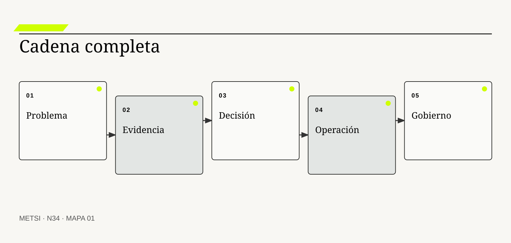
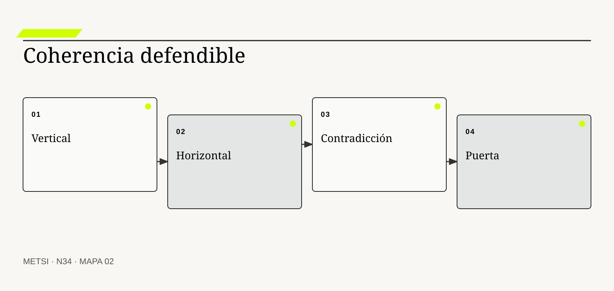
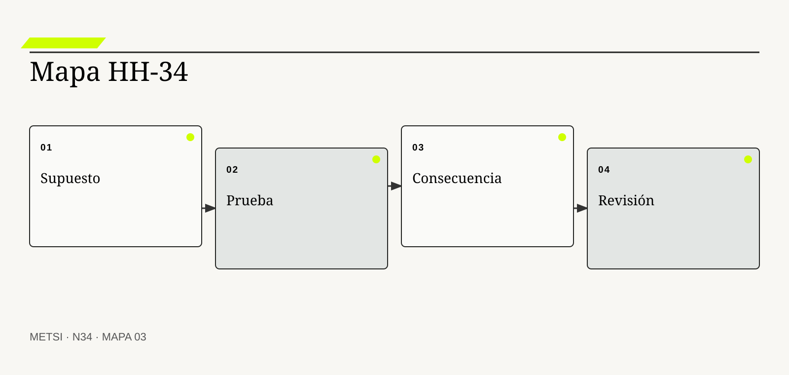

PC
Peter Checkland y John Poulter
Conectan indagación, modelos y acción en situaciones problemáticas.

N34 reconstruye la cadena completa desde problema y evidencia hasta operación y gobierno, y convierte un conjunto de artefactos en una intervención…
Reconstruir la cadena completa: del problema y la evidencia a la operación y el gobierno
Ruta de lectura: problema, distinciones, decisiones, prueba, transferencia y preparación.
Nota. SIN NUM. identifica aparatos de orientación y referencia.
Seis voces para ampliar, contrastar y discutir N34.
Conectan indagación, modelos y acción en situaciones problemáticas.

Explica reflexión profesional en problemas indeterminados.
Estructura afirmaciones, evidencia, garantías y refutaciones.
Organiza procesos de ciclo de vida y trazabilidad de información.
Integra decisiones, requisitos, verificación, validación y ciclo de vida.

Vincula éxito con valor, accountability y adaptación.
N34 no resume estas fuentes ni las convierte en receta. Las pone en tensión para construir juicio profesional.
¿Cómo demostrar que una intervención conserva coherencia desde el problema inicial hasta sus decisiones, su operación y su gobierno?

N34 reconstruye la cadena completa desde problema y evidencia hasta operación y gobierno, y convierte un conjunto de artefactos en una intervención trazable.
Hotel Horizonte reúne mapas, entrevistas, modelos, contratos, pruebas, tableros y registros de IA. Cada pieza supera su revisión local. Al intentar defender la intervención completa, aparecen saltos: una métrica no responde a la tesis, un control no cubre el daño principal y un compromiso integrado operativa no tiene fuente.
El problema no es falta de documentación. Es falta de cadena. Una intervención profesional debe permitir recorrer problema, evidencia, explicación, alternativa, decisión, realización, operación, consecuencia y revisión.
Integrar no significa resumir treinta lecturas ni unir archivos. Significa demostrar coherencia y localizar contradicciones sin borrarlas.
La mesa de integración construye una matriz de trazabilidad argumental. Cada afirmación relevante tiene evidencia, objeción, decisión, owner, señal y condición de revisión.
La cadena también conserva ausencias. Lo que todavía no se sabe aparece como riesgo o próxima prueba, no como espacio rellenado por confianza.
N34 abre el Bloque H. Recibe los instrumentos acumulados de N01 a N33 y los convierte en un expediente defendible de intervención completa.
HH-34 recompone el caso desde la promesa de ingreso. Vincula episodios y actores con la tesis, modelos y alternativas; conecta estrategia con contratos, calidad y operación; y une gobierno de IA con señales e incidentes. Las contradicciones se convierten en preguntas de integración y no en defectos que deban ocultarse.
N34 reconstruye la cadena completa desde problema y evidencia hasta operación y gobierno, y convierte un conjunto de artefactos en una intervención trazable.
N33 deja evidencia y decisiones abiertas que N34 utiliza sin reabrir su contenido. N34 reconstruye la cadena completa desde problema y evidencia hasta operación y gobierno, y convierte un conjunto de artefactos en una intervención trazable.
N35 tomará esta cadena y la adaptará a audiencias, objeciones y contextos de transferencia. N34 no diseña todavía la defensa comunicacional ni la apropiación por terceros.
Checkland, P. y Poulter, J. aportan una fuente contrastable para definir alcance, evidencia y condiciones de revisión. En N34, ese aporte pone a prueba decisiones concretas y no funciona como respaldo ornamental. Su alcance se conserva en N34: ninguna referencia sustituye la evidencia del caso ni la autoridad de integración necesaria para intervenir.
Schön, D. A. permite tratar la revisión del curso de acción como parte del trabajo profesional. En N34, ese aporte pone a prueba decisiones concretas y no funciona como respaldo ornamental. Su alcance se conserva en N34: ninguna referencia sustituye la evidencia del caso ni la autoridad de integración necesaria para intervenir.
Toulmin, S. estructura afirmación, evidencia, garantía, calificador y refutación. En N34, ese aporte pone a prueba decisiones concretas y no funciona como respaldo ornamental. Su alcance se conserva en N34: ninguna referencia sustituye la evidencia del caso ni la autoridad de integración necesaria para intervenir.
ISO/IEC/IEEE establece procesos de ciclo de vida sin prescribir un modelo único y admite aplicación iterativa y concurrente. En N34, ese aporte pone a prueba decisiones concretas y no funciona como respaldo ornamental. Su alcance se conserva en N34: ninguna referencia sustituye la evidencia del caso ni la autoridad de integración necesaria para intervenir.
ISO/IEC/IEEE aporta una fuente contrastable para definir alcance, evidencia y condiciones de revisión. En N34, ese aporte pone a prueba decisiones concretas y no funciona como respaldo ornamental. Su alcance se conserva en N34: ninguna referencia sustituye la evidencia del caso ni la autoridad de integración necesaria para intervenir.
SEBoK aporta una fuente contrastable para definir alcance, evidencia y condiciones de revisión. En N34, ese aporte pone a prueba decisiones concretas y no funciona como respaldo ornamental. Su alcance se conserva en N34: ninguna referencia sustituye la evidencia del caso ni la autoridad de integración necesaria para intervenir.
Project Management Institute aporta una fuente contrastable para definir alcance, evidencia y condiciones de revisión. En N34, ese aporte pone a prueba decisiones concretas y no funciona como respaldo ornamental. Su alcance se conserva en N34: ninguna referencia sustituye la evidencia del caso ni la autoridad de integración necesaria para intervenir.
Project Management Institute define éxito como valor suficiente para justificar esfuerzo y gasto. En N34, ese aporte pone a prueba decisiones concretas y no funciona como respaldo ornamental. Su alcance se conserva en N34: ninguna referencia sustituye la evidencia del caso ni la autoridad de integración necesaria para intervenir.
Argyris, C. y Schön, D. A. aportan una fuente contrastable para definir alcance, evidencia y condiciones de revisión. En N34, ese aporte pone a prueba decisiones concretas y no funciona como respaldo ornamental. Su alcance se conserva en N34: ninguna referencia sustituye la evidencia del caso ni la autoridad de integración necesaria para intervenir.
Rittel, H. W. J. y Webber, M. M. aportan una fuente contrastable para definir alcance, evidencia y condiciones de revisión. En N34, ese aporte pone a prueba decisiones concretas y no funciona como respaldo ornamental. Su alcance se conserva en N34: ninguna referencia sustituye la evidencia del caso ni la autoridad de integración necesaria para intervenir.
NIST incorpora gobierno, medición y manejo del riesgo de inteligencia artificial. En N34, ese aporte pone a prueba decisiones concretas y no funciona como respaldo ornamental. Su alcance se conserva en N34: ninguna referencia sustituye la evidencia del caso ni la autoridad de integración necesaria para intervenir.
Senge, P. M. aporta una fuente contrastable para definir alcance, evidencia y condiciones de revisión. En N34, ese aporte pone a prueba decisiones concretas y no funciona como respaldo ornamental. Su alcance se conserva en N34: ninguna referencia sustituye la evidencia del caso ni la autoridad de integración necesaria para intervenir.

La cadena relaciona situación, explicación, decisión, acción, consecuencia y revisión. La definición fija el objeto de decisión. Si el equipo de N34 no puede expresar qué compromiso organiza, la categoría funciona como etiqueta y no como instrumento.
No es un cronograma ni un listado de entregables. La distinción evita que una palabra familiar oculte otro mecanismo. En N34, confundirlos cambia qué se observa, qué se acepta como avance y quién debe intervenir.
En cadena de intervención, el recorrido causal debe mostrar qué condición habilita la acción, qué transformación ocurre y quién absorbe el resultado. Cadena de intervención se operacionaliza delimitando propósito, población, entradas, autoridad, acción, consecuencia y condición de revisión. El recorrido se contrasta con una alternativa más simple y con un escenario adverso antes de ampliar compromiso. Si un salto depende sólo de una explicación oral, la estrategia todavía no puede gobernarlo.
La evidencia relevante para cadena de intervención no se limita al resultado promedio. La evidencia integra una prueba previa, resultados desagregados y el episodio siguiente: La promesa del huésped conecta todas las piezas También conserva las decisiones humanas y automáticas que produjeron ese resultado. N34 busca además casos negativos, diferencias entre poblaciones y señales de que la explicación elegida podría ser insuficiente.
Ejemplo. La promesa del huésped conecta todas las piezas En N34, el episodio vuelve visible la relación entre ritmo, autoridad, evidencia y capacidad de reparación.
El tradeoff central de cadena de intervención aparece entre anticipar y preservar opciones. Anticipar puede reducir coordinación y también fijar una premisa prematura; preservar opciones puede producir aprendizaje y también demorar una protección necesaria. La elección debe declarar cuál de esos costos acepta, durante cuánto tiempo y para quién.
La lectura transversal de cadena de intervención termina con una pregunta de uso: ¿qué podría decidir ahora una persona que antes no podía? En N34, la respuesta debe nombrar una acción, una restricción y una evidencia, no sólo una comprensión mejorada.
Operacionalizar cadena de intervención requiere asignar una unidad observable. La mesa de integración define qué episodio contará, desde qué momento, con qué población y bajo qué fuente. Después compara al menos un caso ordinario con otro que fuerce excepción. Esta precisión en N34 evita que una conclusión general se sostenga sólo en ejemplos convenientes.
La decisión profesional no termina en adoptar cadena de intervención. Se compara una ruta principal con una explicación rival, se explicita quién queda expuesto y se conserva un modo de revisar. Una cadena demasiado lineal puede ocultar retroalimentación y conflicto. El límite forma parte del diseño y no una nota posterior.
La trazabilidad permite seguir una afirmación hasta evidencia, autoridad y uso. Conviene comenzar por su función profesional. Si el equipo de N34 no puede expresar qué compromiso organiza, la categoría funciona como etiqueta y no como instrumento.
No busca rastrear cada frase ni acumular enlaces. El contraste importa porque conduce a pruebas distintas. En N34, confundirlos cambia qué se observa, qué se acepta como avance y quién debe intervenir.
El mecanismo de trazabilidad argumental no se presume por el nombre. Trazabilidad argumental se operacionaliza delimitando propósito, población, entradas, autoridad, acción, consecuencia y condición de revisión. El recorrido se contrasta con una alternativa más simple y con un escenario adverso antes de ampliar compromiso. Debe localizarse dónde comienza, qué relaciones activa, qué demora introduce y qué capacidad de reparación queda disponible cuando la expectativa no se cumple.
Una afirmación sobre trazabilidad argumental gana fuerza cuando puede reconstruirse desde fuentes independientes. La evidencia integra una prueba previa, resultados desagregados y el episodio siguiente: La tesis se vincula con episodios y decisiones También conserva las decisiones humanas y automáticas que produjeron ese resultado. La ausencia de señal también se interpreta: puede significar estabilidad, mala observación o exclusión del caso que más importa.
Ejemplo. La tesis se vincula con episodios y decisiones En N34, el episodio vuelve visible la relación entre ritmo, autoridad, evidencia y capacidad de reparación.
La escala modifica trazabilidad argumental. Una solución válida para un equipo puede fallar cuando atraviesa sedes, turnos o proveedores porque aumenta la distancia entre señal y autoridad. Antes de ampliar, N34 prueba si la misma decisión conserva significado y reparación bajo esa nueva distribución.
Para evitar consenso aparente, trazabilidad argumental se revisa con alguien afectado y con alguien responsable de reparar. Las dos perspectivas pueden valorar resultados diferentes y obligan a declarar la prioridad elegida.
En la práctica, trazabilidad argumental atraviesa más de un área. Se identifican handoffs, esperas, decisiones y datos que cada participante puede ver. Cuando dos áreas usan evidencia distinta en N34, el expediente conserva la divergencia hasta determinar si representa error, perspectiva legítima o una brecha que la estrategia debe resolver.
En una revisión, trazabilidad argumental debe responder tres preguntas: qué mejora, qué desplaza y qué vuelve más difícil de revertir. Trazabilidad formal sin lectura crítica puede legitimar una premisa débil. Si esas respuestas cambian, también debe cambiar el compromiso, aunque el trabajo previo haya sido técnicamente correcto.
La coherencia vertical alinea problema, outcome, medida y decisión. El concepto adquiere valor cuando cambia un compromiso integrado. Si el equipo de N34 no puede expresar qué compromiso organiza, la categoría funciona como etiqueta y no como instrumento.
No significa que todos los niveles usen la misma métrica. Su vecino conceptual puede parecer equivalente y no lo es. En N34, confundirlos cambia qué se observa, qué se acepta como avance y quién debe intervenir.
Comprender coherencia vertical exige seguir la decisión en el tiempo. Coherencia vertical se operacionaliza delimitando propósito, población, entradas, autoridad, acción, consecuencia y condición de revisión. El recorrido se contrasta con una alternativa más simple y con un escenario adverso antes de ampliar compromiso. La reconstrucción distingue condición, intervención, señal temprana y consecuencia para evitar atribuir a una práctica un efecto producido por otro cambio simultáneo.
La prueba de cadena completa de coherencia vertical debe formularse antes de conocer el resultado. La evidencia integra una prueba previa, resultados desagregados y el episodio siguiente: La demora observada se conecta con una capacidad y un SLO También conserva las decisiones humanas y automáticas que produjeron ese resultado. Se registra qué observación sostendría continuar, cuál obligaría a adaptar y cuál activaría detención o escalamiento.
Ejemplo. La demora observada se conecta con una capacidad y un SLO En N34, el episodio vuelve visible la relación entre ritmo, autoridad, evidencia y capacidad de reparación.
El tiempo también altera coherencia vertical. Una evidencia suficiente para explorar puede ser insuficiente para operar de forma permanente. Por eso se separan prueba local, compromiso transitorio y condición estable, y cada estado conserva fecha, alcance y responsable de revisión.
El registro de coherencia vertical conserva una explicación rival. Si esa alternativa predice mejor el episodio siguiente, el equipo cambia de curso sin reescribir retrospectivamente lo que creía saber.
La gobernanza de coherencia vertical incluye quién puede proponer, aprobar, ejecutar, observar y reparar. Esas funciones no se presumen por cargo ni por permiso técnico. N34 las prueba en un escenario donde falta la persona habitual, porque una capacidad que sólo funciona con conocimiento privado todavía no pertenece a la organización.
El juicio sobre coherencia vertical incluye distribución de consecuencias. Optimizar una capa puede contradecir el propósito superior. Una mejora agregada no alcanza si concentra espera, riesgo o trabajo invisible en un grupo sin autoridad para discutir la decisión.
La coherencia horizontal verifica compatibilidad entre procesos, datos, tecnología y organización. La definición fija el objeto de decisión. Si el equipo de N34 no puede expresar qué compromiso organiza, la categoría funciona como etiqueta y no como instrumento.
No equivale a uniformidad entre áreas. La distinción evita que una palabra familiar oculte otro mecanismo. En N34, confundirlos cambia qué se observa, qué se acepta como avance y quién debe intervenir.
La explicación operacional de coherencia horizontal conecta personas, reglas y tecnología. Coherencia horizontal se operacionaliza delimitando propósito, población, entradas, autoridad, acción, consecuencia y condición de revisión. El recorrido se contrasta con una alternativa más simple y con un escenario adverso antes de ampliar compromiso. Esa conexión permite decidir qué parte puede modificarse localmente y cuál requiere coordinación con otras autoridades o capacidades.
Para auditar coherencia horizontal, conviene combinar evidencia de diseño, ejecución y consecuencia. La evidencia integra una prueba previa, resultados desagregados y el episodio siguiente: Contrato, operación y reparación usan el mismo estado También conserva las decisiones humanas y automáticas que produjeron ese resultado. Ninguna fuente domina automáticamente; una especificación correcta puede convivir con una operación dañina.
Ejemplo. Contrato, operación y reparación usan el mismo estado En N34, el episodio vuelve visible la relación entre ritmo, autoridad, evidencia y capacidad de reparación.
Existe además una dimensión política en coherencia horizontal. La opción más eficiente puede reducir la capacidad de una persona para cuestionar un compromiso integrado o trasladar trabajo sin reconocerlo. N34 registra esa distribución y no la esconde dentro de un indicador agregado.
Una prueba adversa de coherencia horizontal introduce demora, ausencia de autoridad o dato incompleto. El objetivo de N34 no es cubrir todas las fallas, sino revelar si la estrategia mantiene una salida segura fuera del camino ordinario.
El indicador de coherencia horizontal se elige después de formular la decisión. Puede combinar tiempo, calidad, distribución y costo de reparación. Una cifra aislada rara vez explica el mecanismo. En N34, la lectura conjunta de señales evita optimizar velocidad mientras aumenta retrabajo, exclusión o dependencia.
La condición de cierre de coherencia horizontal no es perfección. Diferencias legítimas deben conservar traducciones y no borrarse. Es evidencia suficiente para el uso previsto, riesgo residual aceptado por autoridad y una ruta clara cuando el supuesto deje de cumplirse.

El registro identifica premisas que sostienen decisiones y sus pruebas. Conviene comenzar por su función profesional. Si el equipo de N34 no puede expresar qué compromiso organiza, la categoría funciona como etiqueta y no como instrumento.
No es una lista genérica de riesgos. El contraste importa porque conduce a pruebas distintas. En N34, confundirlos cambia qué se observa, qué se acepta como avance y quién debe intervenir.
Para que registro de supuestos sea algo más que una etiqueta, debe existir una cadena examinable. Registro de supuestos se operacionaliza delimitando propósito, población, entradas, autoridad, acción, consecuencia y condición de revisión. El recorrido se contrasta con una alternativa más simple y con un escenario adverso antes de ampliar compromiso. La cadena incluye supuestos, handoffs y efectos laterales que una descripción ideal suele omitir.
La mesa de integración no declara resuelto registro de supuestos por acuerdo retórico. La evidencia integra una prueba previa, resultados desagregados y el episodio siguiente: La disponibilidad de Recepción se prueba en turno nocturno También conserva las decisiones humanas y automáticas que produjeron ese resultado. Una persona ajena al diseño debe poder repetir la prueba y comprender por qué el resultado habilita un compromiso integrado concreta.
Ejemplo. La disponibilidad de Recepción se prueba en turno nocturno En N34, el episodio vuelve visible la relación entre ritmo, autoridad, evidencia y capacidad de reparación.
La mantenibilidad de registro de supuestos se prueba mediante cambio deliberado. Se modifica una regla, una fuente o una dependencia y se observa quién detecta el impacto, cuánto tarda en responder y qué información necesita. En N34, si la respuesta depende de memoria privada, la capacidad todavía es frágil.
El costo de registro de supuestos se observa tanto en presupuesto como en atención, espera, coordinación y dependencia. Lo que no figura en una factura puede seguir siendo el costo que define la viabilidad.
La transición asociada con registro de supuestos necesita un estado intermedio explícito. Durante ese período conviven reglas, versiones o capacidades diferentes. N34 declara cuál rige para cada población, cómo se comunica y qué contingencia protege a quien podría quedar entre ambos sistemas.
La reconstrucción de registro de supuestos evita dos extremos: conservar por inercia y cambiar por identidad metodológica. Un supuesto puede volverse falso sin producir una alerta inmediata. Entre ambos queda un compromiso integrado provisional con fecha, responsable y prueba de revisión.
El registro conserva alternativas, razones, autoridad, fecha y consecuencia. El concepto adquiere valor cuando cambia un compromiso integrado. Si el equipo de N34 no puede expresar qué compromiso organiza, la categoría funciona como etiqueta y no como instrumento.
No es la minuta completa de una reunión. Su vecino conceptual puede parecer equivalente y no lo es. En N34, confundirlos cambia qué se observa, qué se acepta como avance y quién debe intervenir.
El valor de registro de decisiones aparece al contrastar alternativas. Registro de decisiones se operacionaliza delimitando propósito, población, entradas, autoridad, acción, consecuencia y condición de revisión. El recorrido se contrasta con una alternativa más simple y con un escenario adverso antes de ampliar compromiso. Si dos opciones producen el mismo entregable inmediato, el mecanismo permite compararlas por aprendizaje, dependencia, riesgo residual y posibilidad de salida.
La suficiencia de evidencia para registro de decisiones depende del costo de equivocarse. La evidencia integra una prueba previa, resultados desagregados y el episodio siguiente: Se documenta por qué se limita autonomía del agente También conserva las decisiones humanas y automáticas que produjeron ese resultado. A mayor irreversibilidad o desigualdad de daño, mayor contraste, supervisión y autoridad se requieren.
Ejemplo. Se documenta por qué se limita autonomía del agente En N34, el episodio vuelve visible la relación entre ritmo, autoridad, evidencia y capacidad de reparación.
Finalmente, registro de decisiones debe convivir con otras decisiones. Optimizarla de manera aislada puede empeorar flujo, seguridad o comprensión. HH-34 N34 explicita dependencias y evita que una mejora local se presente como outcome completo del sistema.
La revisión de registro de decisiones fija fecha y desencadenante. Puede ocurrir por incidente, cambio normativo, nueva población o evidencia acumulada. Sin esa regla en N34, un compromiso integrado provisional se vuelve permanente por olvido.
El cierre de registro de decisiones debe sobrevivir a una revisión independiente. La evidencia, las decisiones y los límites se almacenan de manera que otra persona pueda cuestionarlos. En N34, la trazabilidad no busca eliminar desacuerdo; busca que el desacuerdo se concentre en supuestos examinables y no en recuerdos incompatibles.
La intervención integrada debe poder explicar por qué registro de decisiones recibe cierta inversión y no otra. Registrar no reemplaza revisar ni reparar un compromiso integrado fallida. Esa explicación conecta valor, costo, aprendizaje y reparación, y permanece abierta a evidencia nueva.
La arquitectura de evidencia define qué fuentes sostienen qué decisiones y con qué vigencia. La definición fija el objeto de decisión. Si el equipo de N34 no puede expresar qué compromiso organiza, la categoría funciona como etiqueta y no como instrumento.
No es un repositorio único ni una jerarquía automática de métodos. La distinción evita que una palabra familiar oculte otro mecanismo. En N34, confundirlos cambia qué se observa, qué se acepta como avance y quién debe intervenir.
En arquitectura de evidencia, el recorrido causal debe mostrar qué condición habilita la acción, qué transformación ocurre y quién absorbe el resultado. Arquitectura de evidencia se operacionaliza delimitando propósito, población, entradas, autoridad, acción, consecuencia y condición de revisión. El recorrido se contrasta con una alternativa más simple y con un escenario adverso antes de ampliar compromiso. Si un salto depende sólo de una explicación oral, la estrategia todavía no puede gobernarlo.
La evidencia relevante para arquitectura de evidencia no se limita al resultado promedio. La evidencia integra una prueba previa, resultados desagregados y el episodio siguiente: Entrevistas, trazas y pruebas se triangulan También conserva las decisiones humanas y automáticas que produjeron ese resultado. N34 busca además casos negativos, diferencias entre poblaciones y señales de que la explicación elegida podría ser insuficiente.
Ejemplo. Entrevistas, trazas y pruebas se triangulan En N34, el episodio vuelve visible la relación entre ritmo, autoridad, evidencia y capacidad de reparación.
El tradeoff central de arquitectura de evidencia aparece entre anticipar y preservar opciones. Anticipar puede reducir coordinación y también fijar una premisa prematura; preservar opciones puede producir aprendizaje y también demorar una protección necesaria. La elección debe declarar cuál de esos costos acepta, durante cuánto tiempo y para quién.
La lectura transversal de arquitectura de evidencia termina con una pregunta de uso: ¿qué podría decidir ahora una persona que antes no podía? En N34, la respuesta debe nombrar una acción, una restricción y una evidencia, no sólo una comprensión mejorada.
Operacionalizar arquitectura de evidencia requiere asignar una unidad observable. La mesa de integración define qué episodio contará, desde qué momento, con qué población y bajo qué fuente. Después compara al menos un caso ordinario con otro que fuerce excepción. Esta precisión en N34 evita que una conclusión general se sostenga sólo en ejemplos convenientes.
La decisión profesional no termina en adoptar arquitectura de evidencia. Se compara una ruta principal con una explicación rival, se explicita quién queda expuesto y se conserva un modo de revisar. Más evidencia puede aumentar contradicción y exigir mejor juicio. El límite forma parte del diseño y no una nota posterior.
Una contradicción productiva revela fronteras, supuestos o perspectivas incompatibles. Conviene comenzar por su función profesional. Si el equipo de N34 no puede expresar qué compromiso organiza, la categoría funciona como etiqueta y no como instrumento.
No es un error que deba promediarse ni una opinión equivalente a cualquier dato. El contraste importa porque conduce a pruebas distintas. En N34, confundirlos cambia qué se observa, qué se acepta como avance y quién debe intervenir.
El mecanismo de contradicción productiva no se presume por el nombre. Contradicción productiva se operacionaliza delimitando propósito, población, entradas, autoridad, acción, consecuencia y condición de revisión. El recorrido se contrasta con una alternativa más simple y con un escenario adverso antes de ampliar compromiso. Debe localizarse dónde comienza, qué relaciones activa, qué demora introduce y qué capacidad de reparación queda disponible cuando la expectativa no se cumple.
Una afirmación sobre contradicción productiva gana fuerza cuando puede reconstruirse desde fuentes independientes. La evidencia integra una prueba previa, resultados desagregados y el episodio siguiente: Comercial y Recepción definen liberada de manera distinta También conserva las decisiones humanas y automáticas que produjeron ese resultado. La ausencia de señal también se interpreta: puede significar estabilidad, mala observación o exclusión del caso que más importa.
Ejemplo. Comercial y Recepción definen liberada de manera distinta En N34, el episodio vuelve visible la relación entre ritmo, autoridad, evidencia y capacidad de reparación.
La escala modifica contradicción productiva. Una solución válida para un equipo puede fallar cuando atraviesa sedes, turnos o proveedores porque aumenta la distancia entre señal y autoridad. Antes de ampliar, N34 prueba si la misma decisión conserva significado y reparación bajo esa nueva distribución.
Para evitar consenso aparente, contradicción productiva se revisa con alguien afectado y con alguien responsable de reparar. Las dos perspectivas pueden valorar resultados diferentes y obligan a declarar la prioridad elegida.
En la práctica, contradicción productiva atraviesa más de un área. Se identifican handoffs, esperas, decisiones y datos que cada participante puede ver. Cuando dos áreas usan evidencia distinta en N34, el expediente conserva la divergencia hasta determinar si representa error, perspectiva legítima o una brecha que la estrategia debe resolver.
En una revisión, contradicción productiva debe responder tres preguntas: qué mejora, qué desplaza y qué vuelve más difícil de revertir. Conservar toda contradicción sin decisión paraliza la intervención. Si esas respuestas cambian, también debe cambiar el compromiso, aunque el trabajo previo haya sido técnicamente correcto.

La puerta comprueba suficiencia conjunta antes de ampliar compromiso. El concepto adquiere valor cuando cambia un compromiso integrado. Si el equipo de N34 no puede expresar qué compromiso organiza, la categoría funciona como etiqueta y no como instrumento.
No es una aprobación por acumulación de firmas. Su vecino conceptual puede parecer equivalente y no lo es. En N34, confundirlos cambia qué se observa, qué se acepta como avance y quién debe intervenir.
Comprender puerta de integración exige seguir la decisión en el tiempo. Puerta de integración se operacionaliza delimitando propósito, población, entradas, autoridad, acción, consecuencia y condición de revisión. El recorrido se contrasta con una alternativa más simple y con un escenario adverso antes de ampliar compromiso. La reconstrucción distingue condición, intervención, señal temprana y consecuencia para evitar atribuir a una práctica un efecto producido por otro cambio simultáneo.
La prueba de cadena completa de puerta de integración debe formularse antes de conocer el resultado. La evidencia integra una prueba previa, resultados desagregados y el episodio siguiente: El piloto avanza sólo si contrato, contingencia y señal cierran También conserva las decisiones humanas y automáticas que produjeron ese resultado. Se registra qué observación sostendría continuar, cuál obligaría a adaptar y cuál activaría detención o escalamiento.
Ejemplo. El piloto avanza sólo si contrato, contingencia y señal cierran En N34, el episodio vuelve visible la relación entre ritmo, autoridad, evidencia y capacidad de reparación.
El tiempo también altera puerta de integración. Una evidencia suficiente para explorar puede ser insuficiente para operar de forma permanente. Por eso se separan prueba local, compromiso transitorio y condición estable, y cada estado conserva fecha, alcance y responsable de revisión.
El registro de puerta de integración conserva una explicación rival. Si esa alternativa predice mejor el episodio siguiente, el equipo cambia de curso sin reescribir retrospectivamente lo que creía saber.
La gobernanza de puerta de integración incluye quién puede proponer, aprobar, ejecutar, observar y reparar. Esas funciones no se presumen por cargo ni por permiso técnico. N34 las prueba en un escenario donde falta la persona habitual, porque una capacidad que sólo funciona con conocimiento privado todavía no pertenece a la organización.
El juicio sobre puerta de integración incluye distribución de consecuencias. La puerta debe tener autoridad y alternativas reales. Una mejora agregada no alcanza si concentra espera, riesgo o trabajo invisible en un grupo sin autoridad para discutir la decisión.
HH-34 mínimo contiene lo necesario para reconstruir y cuestionar la intervención. La definición fija el objeto de decisión. Si el equipo de N34 no puede expresar qué compromiso organiza, la categoría funciona como etiqueta y no como instrumento.
No es el documento más corto ni una carpeta exhaustiva. La distinción evita que una palabra familiar oculte otro mecanismo. En N34, confundirlos cambia qué se observa, qué se acepta como avance y quién debe intervenir.
La explicación operacional de expediente mínimo defendible conecta personas, reglas y tecnología. Expediente mínimo defendible se operacionaliza delimitando propósito, población, entradas, autoridad, acción, consecuencia y condición de revisión. El recorrido se contrasta con una alternativa más simple y con un escenario adverso antes de ampliar compromiso. Esa conexión permite decidir qué parte puede modificarse localmente y cuál requiere coordinación con otras autoridades o capacidades.
Para auditar expediente mínimo defendible, conviene combinar evidencia de diseño, ejecución y consecuencia. La evidencia integra una prueba previa, resultados desagregados y el episodio siguiente: Una audiencia ajena puede seguir la cadena También conserva las decisiones humanas y automáticas que produjeron ese resultado. Ninguna fuente domina automáticamente; una especificación correcta puede convivir con una operación dañina.
Ejemplo. Una audiencia ajena puede seguir la cadena En N34, el episodio vuelve visible la relación entre ritmo, autoridad, evidencia y capacidad de reparación.
Existe además una dimensión política en expediente mínimo defendible. La opción más eficiente puede reducir la capacidad de una persona para cuestionar un compromiso integrado o trasladar trabajo sin reconocerlo. N34 registra esa distribución y no la esconde dentro de un indicador agregado.
Una prueba adversa de expediente mínimo defendible introduce demora, ausencia de autoridad o dato incompleto. El objetivo de N34 no es cubrir todas las fallas, sino revelar si la estrategia mantiene una salida segura fuera del camino ordinario.
El indicador de expediente mínimo defendible se elige después de formular la decisión. Puede combinar tiempo, calidad, distribución y costo de reparación. Una cifra aislada rara vez explica el mecanismo. En N34, la lectura conjunta de señales evita optimizar velocidad mientras aumenta retrabajo, exclusión o dependencia.
La condición de cierre de expediente mínimo defendible no es perfección. Reducir demasiado puede ocultar voces y decisiones materiales. Es evidencia suficiente para el uso previsto, riesgo residual aceptado por autoridad y una ruta clara cuando el supuesto deje de cumplirse.
La prueba de cadena completa sigue una promesa a través de fronteras y consecuencias. Conviene comenzar por su función profesional. Si el equipo de N34 no puede expresar qué compromiso organiza, la categoría funciona como etiqueta y no como instrumento.
No se reduce a integración técnica ni camino feliz. El contraste importa porque conduce a pruebas distintas. En N34, confundirlos cambia qué se observa, qué se acepta como avance y quién debe intervenir.
Para que prueba de extremo a extremo sea algo más que una etiqueta, debe existir una cadena examinable. Prueba de extremo a extremo se operacionaliza delimitando propósito, población, entradas, autoridad, acción, consecuencia y condición de revisión. El recorrido se contrasta con una alternativa más simple y con un escenario adverso antes de ampliar compromiso. La cadena incluye supuestos, handoffs y efectos laterales que una descripción ideal suele omitir.
La mesa de integración no declara resuelto prueba de extremo a extremo por acuerdo retórico. La evidencia integra una prueba previa, resultados desagregados y el episodio siguiente: Una reserva adversa atraviesa canal, hotel y reparación También conserva las decisiones humanas y automáticas que produjeron ese resultado. Una persona ajena al diseño debe poder repetir la prueba y comprender por qué el resultado habilita un compromiso integrado concreta.
Ejemplo. Una reserva adversa atraviesa canal, hotel y reparación En N34, el episodio vuelve visible la relación entre ritmo, autoridad, evidencia y capacidad de reparación.
La mantenibilidad de prueba de extremo a extremo se prueba mediante cambio deliberado. Se modifica una regla, una fuente o una dependencia y se observa quién detecta el impacto, cuánto tarda en responder y qué información necesita. En N34, si la respuesta depende de memoria privada, la capacidad todavía es frágil.
El costo de prueba de extremo a extremo se observa tanto en presupuesto como en atención, espera, coordinación y dependencia. Lo que no figura en una factura puede seguir siendo el costo que define la viabilidad.
La transición asociada con prueba de extremo a extremo necesita un estado intermedio explícito. Durante ese período conviven reglas, versiones o capacidades diferentes. N34 declara cuál rige para cada población, cómo se comunica y qué contingencia protege a quien podría quedar entre ambos sistemas.
La reconstrucción de prueba de extremo a extremo evita dos extremos: conservar por inercia y cambiar por identidad metodológica. Un caso no representa toda la población y debe combinarse con cobertura. Entre ambos queda un compromiso integrado provisional con fecha, responsable y prueba de revisión.
El cierre declara qué se sabe, qué permanece abierto y quién seguirá observando. El concepto adquiere valor cuando cambia un compromiso integrado. Si el equipo de N34 no puede expresar qué compromiso organiza, la categoría funciona como etiqueta y no como instrumento.
No equivale a certeza total ni a terminar documentos. Su vecino conceptual puede parecer equivalente y no lo es. En N34, confundirlos cambia qué se observa, qué se acepta como avance y quién debe intervenir.
El valor de cierre con incertidumbre aparece al contrastar alternativas. Cierre con incertidumbre se operacionaliza delimitando propósito, población, entradas, autoridad, acción, consecuencia y condición de revisión. El recorrido se contrasta con una alternativa más simple y con un escenario adverso antes de ampliar compromiso. Si dos opciones producen el mismo entregable inmediato, el mecanismo permite compararlas por aprendizaje, dependencia, riesgo residual y posibilidad de salida.
La suficiencia de evidencia para cierre con incertidumbre depende del costo de equivocarse. La evidencia integra una prueba previa, resultados desagregados y el episodio siguiente: La operación acepta señales y preguntas pendientes También conserva las decisiones humanas y automáticas que produjeron ese resultado. A mayor irreversibilidad o desigualdad de daño, mayor contraste, supervisión y autoridad se requieren.
Ejemplo. La operación acepta señales y preguntas pendientes En N34, el episodio vuelve visible la relación entre ritmo, autoridad, evidencia y capacidad de reparación.
Finalmente, cierre con incertidumbre debe convivir con otras decisiones. Optimizarla de manera aislada puede empeorar flujo, seguridad o comprensión. HH-34 N34 explicita dependencias y evita que una mejora local se presente como outcome completo del sistema.
La revisión de cierre con incertidumbre fija fecha y desencadenante. Puede ocurrir por incidente, cambio normativo, nueva población o evidencia acumulada. Sin esa regla en N34, un compromiso integrado provisional se vuelve permanente por olvido.
El cierre de cierre con incertidumbre debe sobrevivir a una revisión independiente. La evidencia, las decisiones y los límites se almacenan de manera que otra persona pueda cuestionarlos. En N34, la trazabilidad no busca eliminar desacuerdo; busca que el desacuerdo se concentre en supuestos examinables y no en recuerdos incompatibles.
La intervención integrada debe poder explicar por qué cierre con incertidumbre recibe cierta inversión y no otra. Cerrar demasiado pronto congela riesgo; no cerrar nunca diluye responsabilidad. Esa explicación conecta valor, costo, aprendizaje y reparación, y permanece abierta a evidencia nueva.
El instrumento organiza un compromiso integrado concreta y no una descripción total. Cada campo debe completarse con evidencia disponible, incertidumbre explícita y autoridad identificada. Si un campo todavía no puede responderse, se registra como asunto abierto y no se completa por inferencia.
HH-34 se prueba con un escenario ordinario y uno adverso. Una persona que no participó en su construcción debe poder reconstruir qué se decidió, por qué, qué permanece incierto y cuál es la próxima puerta. El cierre no exige certeza total; exige incertidumbre gobernada y una salida practicable.
Una universidad rediseña inscripción, correlatividades, pagos y soporte. Equipos diferentes presentan soluciones localmente correctas.
HH-34 conecta experiencia estudiantil, reglas académicas, datos, infraestructura, atención e incidentes. La prueba de cadena completa de extremo a extremo revela una excepción que ningún entregable aislado contenía.
La transferencia muestra que integrar es sostener una promesa común a través de fronteras de autoridad.
Un equipo presenta todos los artefactos solicitados y los ordena por fecha.
No puede explicar qué decisión habilitó cada uno ni qué contradicción resolvió. El volumen documenta actividad y no intervención.
Un expediente integrado vale porque permite reconstruir el juicio, no porque conserva todo lo producido.
La prueba de cadena completa integral de reconstruir la cadena completa: del problema y la evidencia a la operación y el gobierno toma un compromiso integrado real y la recorre desde su origen hasta una consecuencia observable. Utiliza promesa y población, problema, evidencia, explicaciones rivales para evitar que el análisis quede dividido en artefactos independientes. Cada afirmación debe encontrar una fuente, una autoridad y una condición de revisión. Cuando dos registros no coinciden, la diferencia se conserva como hallazgo hasta explicar su mecanismo.
El escenario ordinario verifica que n34 reconstruye la cadena completa desde problema y evidencia hasta operación y gobierno, y convierte un conjunto de artefactos en una intervención trazable. El escenario adverso modifica una dependencia, introduce demora y deja ausente a la persona que suele resolver. La mesa de integración observa si la estrategia detecta el cambio, limita el daño, comunica incertidumbre y activa reparación sin recurrir a conocimiento privado.
La comparación incluye una alternativa descartada. Se documenta por qué no fue elegida, qué supuesto la volvería preferible y qué costo tendría recuperarla. Este ejercicio protege opciones futuras y evita presentar la decisión actual como única solución técnicamente posible. También vuelve discutibles los costos hundidos cuando aparece evidencia nueva.
La prueba de cadena completa concluye con una defensa breve ante una audiencia ajena al equipo. Esa audiencia debe poder reconstruir el problema, objetar la evidencia y comprender por qué la salida propuesta es proporcional. Si sólo puede repetir la recomendación, el expediente todavía no sostiene un compromiso integrado profesional. Si puede reconocer límites y actuar ante una excepción, existe capacidad transferible.
Confundir integración con resumen simplifica un compromiso integrado que depende de propósito, evidencia y consecuencia. La velocidad inicial se paga cuando operación descubre el supuesto omitido. La recomposición de la cadena vuelve al episodio, identifica quién absorbe el costo y define una prueba antes de continuar.
Ordenar sólo por cronología parece reducir coordinación, pero confunde acuerdo con conocimiento suficiente. La mesa de integración debe comparar una explicación rival, localizar autoridad y registrar qué señal cambiaría el curso elegido.
Trazar sin cuestionar desplaza incertidumbre hacia personas que no participaron de la elección. Corregirlo exige reconstruir el mecanismo, hacer visible el trabajo añadido y establecer una condición de salida proporcional al daño posible.
Alinear métricas y olvidar personas convierte una práctica en fin. La revisión pregunta qué función debía cumplir, qué evidencia produjo y por qué sigue siendo necesaria. Si la función desapareció, la práctica se adapta o se retira.
Borrar contradicciones oculta una frontera. El artefacto puede cerrar y la capacidad seguir incompleta. Un escenario adverso permite observar handoffs, excepciones y reparación antes de ampliar compromiso.
Registrar todas las reuniones confunde cumplimiento formal con decisión defendible. Se necesita conectar fuente, interpretación, implementación y efecto, incluyendo la autoridad de integración que acepta el riesgo residual.
Acumular evidencia sin decisión suele premiar lo visible y dejar fuera mantenimiento, soporte y aprendizaje. La recomposición de la cadena compara el ciclo completo, documenta dependencia y ensaya una salida real.
Aprobar por firmas reduce diversidad de casos a un promedio conveniente. Se revisan poblaciones, extremos y daños asimétricos para evitar que una mejora global silencie una pérdida crítica.
Probar sólo componentes borra memoria y vuelve inexplicable el cambio de rumbo. Una baseline y un registro breve permiten conservar razones sin inmovilizar la estrategia.
Cerrar sin owner deja responsabilidad sin capacidad. El diseño debe unir permiso, recursos, evidencia y posibilidad de reparar; nombrar un dueño no crea por sí mismo una función operativa.
Reabrir todo el curso simplifica un compromiso integrado que depende de propósito, evidencia y consecuencia. La velocidad inicial se paga cuando operación descubre el supuesto omitido. La recomposición de la cadena vuelve al episodio, identifica quién absorbe el costo y define una prueba antes de continuar.
Presentar una única explicación parece reducir coordinación, pero confunde acuerdo con conocimiento suficiente. La mesa de integración debe comparar una explicación rival, localizar autoridad y registrar qué señal cambiaría el curso elegido.
N34 reconstruye la cadena completa desde problema y evidencia hasta operación y gobierno, y convierte un conjunto de artefactos en una intervención trazable. La competencia profesional aparece cuando la elección conserva trazabilidad, expone sus límites y puede ser discutida por quienes deciden, operan y reciben sus consecuencias.

Ningún modelo, expediente o marco elimina incertidumbre, conflicto ni asimetrías de poder.
Ningún modelo, expediente o marco elimina incertidumbre, conflicto ni asimetrías de poder. La evidencia disponible puede ser incompleta, los incentivos pueden desplazar daño y la autoridad de integración formal puede carecer de capacidad real. La lectura exige declarar esas restricciones, limitar exposición, preservar reparación y fijar una revisión verificable.
N35 tomará esta cadena y la adaptará a audiencias, objeciones y contextos de transferencia. N34 no diseña todavía la defensa comunicacional ni la apropiación por terceros.
N34 reconstruye la cadena completa desde problema y evidencia hasta operación y gobierno, y convierte un conjunto de artefactos en una intervención trazable.
El bloque no propone reemplazar una doctrina por otra. Propone hacer visibles las decisiones que cada práctica organiza, la evidencia que necesita y los daños que puede producir. El resultado es una intervención que puede explicarse, probarse y revisarse.
Cadena de intervención: la cadena relaciona situación, explicación, decisión, acción, consecuencia y revisión.
Trazabilidad argumental: la trazabilidad permite seguir una afirmación hasta evidencia, autoridad y uso.
Coherencia vertical: la coherencia vertical alinea problema, outcome, medida y decisión.
Coherencia horizontal: la coherencia horizontal verifica compatibilidad entre procesos, datos, tecnología y organización.
Registro de supuestos: el registro identifica premisas que sostienen decisiones y sus pruebas.
Registro de decisiones: el registro conserva alternativas, razones, autoridad, fecha y consecuencia.
Arquitectura de evidencia: la arquitectura de evidencia define qué fuentes sostienen qué decisiones y con qué vigencia.
Contradicción productiva: una contradicción productiva revela fronteras, supuestos o perspectivas incompatibles.
Puerta de integración: la puerta comprueba suficiencia conjunta antes de ampliar compromiso.
Expediente mínimo defendible: el expediente mínimo contiene lo necesario para reconstruir y cuestionar la intervención.
Prueba de extremo a extremo: la prueba sigue una promesa a través de fronteras y consecuencias.
Cierre con incertidumbre: el cierre declara qué se sabe, qué permanece abierto y quién seguirá observando.
Para el encuentro, seleccionar una intervención conocida, completar el instrumento con evidencia verificable y preparar un compromiso integrado provisional. Incluir una explicación rival, una condición que obligaría a revisar y una consecuencia para una persona afectada.